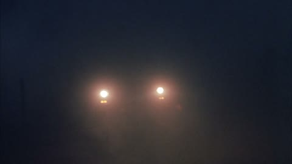

A FILM MADE OF STILLS · SOURCE: ACTIVE SPOKEN TAKE

TILE STILL: WG_001 · LUM 112
302 WARGAMES STILLS + 32 BEAT ARCHIVE STILLS
"Loading spoken line..."
9 SIMULTANEOUS LIVE CUTS · MULTI-SCALE QUADTREE & 8-FRAME STRIPS